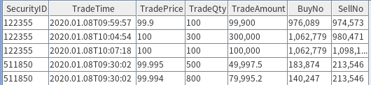
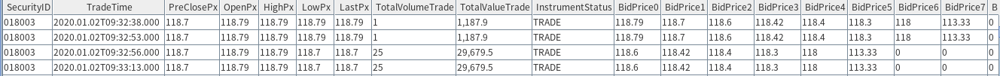
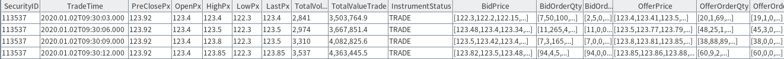
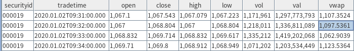
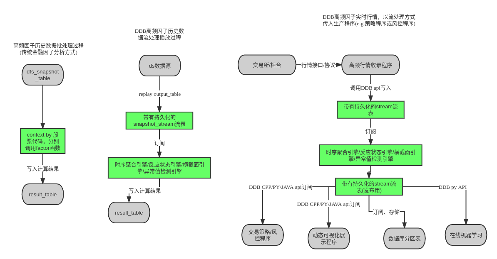

因子计算最佳实践
因子挖掘是量化交易的基础。除传统的基本面因子外，从中高频行情数据中挖掘有价值的因子，并进一步建模和回测以构建交易系统，是一个量化团队的必经之路。金融或者量化金融是一个高度市场化、多方机构高度博弈的领域。因子的有效时间会随着博弈程度的加剧而缩短，如何使用更加高效的工具和流程，更快的找到新的有效的因子，是每一个交易团队必须面对的问题。
近年来，DolphinDB 越来越成为国内乃至国际上大量基金（私募和公募）、资管机构、券商自营团队进行因子挖掘的利器。基于大量客户的反馈，我们特撰写此白皮书，总结使用 DolphinDB 进行因子挖掘的最佳实践。
1. 概述
交易团队用于因子挖掘的常见技术栈有几个大的类别:
- 使用 python、matlab 等数据分析工具
- 委托第三方开发有图形界面的因子挖掘工具
- 使用 java、c++ 等编程语言自行开发挖掘工具
- 在 DolphinDB 等专业工具上进行二次开发
我们暂且不讨论各个技术栈的优缺点。但不管使用何种技术栈，都必须解决以下几个问题:
- 能处理不同频率不同规模的数据集
- 能计算不同风格的因子
- 能处理因子数量不断增长的问题
- 能高效的存取原始数据和因子数据
- 能提升因子挖掘的开发效率
- 能提升因子计算的运行效率（高吞吐，低延时）
- 能解决研究的因子用于生产（实盘交易）的问题
- 能解决多个交易员（研究员）或交易团队一起使用时的各种工程问题，如代码管理、单元测试、权限管理、大规模计算等
DolphinDB 作为分布式计算、实时流计算及分布式存储一体化的高性能时序数据库，非常适合因子的存储、计算、建模、回测和实盘交易。通过部署 DolphinDB 单机或集群环境，用户可以快速地处理 GB 级别甚至 PB 级别的海量数据集，日级、分钟级、快照和逐笔委托数据均能高效响应。
DolphinDB 内置了多范式的编程语言（函数式，命令式，向量式、SQL式），可以帮助研发人员高效开发不同风格的因子。此外，DolphinDB 还提供了丰富且性能高效的函数库（超1400个内置函数），尤其是窗口处理方面经过优化的内置算子，大大缩短了因子计算的延时。
DolphinDB 自带的数据回放和流式增量计算引擎可以方便地解决因子挖掘中研发和生产一体化的问题。DolphinDB 的分布式存储和计算框架，天生便于解决工程中的可靠性、扩展性等问题。
本文基于国内 A 股市场各个频率的数据来演示 DolphinDB 计算和规划因子库存储的方案。根据批量因子计算、实时因子计算、多因子建模、因子库存储规划、因子计算工程化等各个场景的实操演练，以及针对不同方案的对比分析，本文总结出了在 DolphinDB 中进行因子计算的最佳实践。
2. 测试数据集
本文的因子计算基于三类国内 A 股行情数据集：逐笔数据、快照数据和 K 线数据（分钟 K 线和日 K 线）。快照数据以两种形式存储：（1）各档数据分别存储为一列；（2）用 array vector 将所有档位的数据存储为一列。
| 数据集 | 简称 | 代码样例中的分区数据库路径 | 代码样例中的表名 | 分区机制 |
|---|---|---|---|---|
| 逐笔成交 | level2_tick | dfs://tick_SH_L2_TSDB | tick_SH_L2_TSDB | VALUE:每交易日, HASH: [SYMBOL, 20] |
| 快照 | level2_snapshot | dfs://snapshot_SH_L2_TSDB | snapshot_SH_L2_TSDB | VALUE:每交易日, HASH: [SYMBOL, 20] |
| 快照(向量存储) | level2_snapshot | dfs://LEVEL2_Snapshot_ArrayVector | Snap | VALUE:每交易日, HASH: [SYMBOL, 20] |
| 分钟K线 | k_line | dfs://k_minute_level | k_minute | VALUE:交易月, HASH: [SYMBOL, 3] |
| 日K线 | k_line | dfs://k_day_level | k_day | VALUE:年 |
2.1. 逐笔成交数据

逐笔成交是交易所公布买卖双方具体成交的每一笔数据，每3秒发布一次，每次包含这3秒内的所有成交记录。每一笔成交撮合，都由买方和卖方的一笔具体委托组成。上述数据样例采用字段 BuyNo 和 SellNo 标注买卖双方的委托单号，其它关键字段分别为： SecurityID（标的物代码），TradeTime（成交时刻），TradePrice（成交价格），TradeQty（本笔成交量）和 TradeAmount（本笔成交金额）。
每个交易日的原始数据量在 8 GB 上下。根据上表的分区机制进行建库建表，点击查看对应脚本：逐笔成交数据建库建表完整代码。
2.2. 快照数据

股票交易所每3秒发布一次，每次涵盖这3秒结束时的日内累计成交量(TotalVolumeTrade)，日内累计成交金额(TotalValueTrade)，3秒终了时的盘口买卖双方挂单（买方为 Bid，卖方在有些数据源字段为 Offer，在有些数据源字段为 Ask，其余字段以此类推：BidPrice 为买方各档价格，OfferPrice 为卖方各档价格，OrderQty 为买卖双方各档的委托单总量， Orders 为买卖双方委托单数），3秒终了时的最近一笔成交价格（LastPx），全天开盘价（OpenPx），日内截止当下最高价（HighPx），日内截止当下最低价（LowPx）等各字段。其他和逐笔成交一致的字段不再赘述，涵义一致，详情可参见交易所数据说明字典。
每个交易日的原始数据量约在 10G 左右。
在 DolphinDB 2.0版本的 TSDB 存储引擎中，支持 array vector 的存储机制，即可以允许数据表中一个 cell 存储一个向量。在本白皮书的案例中，后面文章会详细介绍 array vector 存储方案和普通存储方案的区别。快照数据的买10档或卖10档在本例中作为一个 vector 存入单个 cell 中，其他各字段和普通快照数据表都相同。
两种存储模式的建库建表可以参考Snapshot普通及arrayVector形式建库和建表完整代码
快照数据的 array_vector 存储形式：

2.3. 分钟K数据

包含每只股票，每分钟的开盘价、最高价、最低价、收盘价，四个价格字段，同时记录本分钟的成交量和成交金额。另外，数据 K 线可以依据基本字段计算衍生字段，比如：k 线均价(vwap 价格)。k 线数据是由逐笔成交数据聚合产生，具体代码可以参考基于快照数据的分钟聚合。
日 K 数据，存储形式和字段跟分钟 k 线一致，可以由分钟 k 线或高频数据聚合产生，这里不作赘述。
日 K 数据，分钟数据的建库建表可以参考：k 线数据建库建表完整代码
3. 投研阶段的因子计算
在投研阶段，会通过历史数据批量计算生成因子。通常，推荐研究员将每一种因子的计算都封装成自定义函数。根据因子类型和使用者习惯的不同，DolphinDB 提供了面板和 SQL 两种计算方式。
在面板计算中，自定义函数的参数一般为向量，矩阵或表，输出一般为向量，矩阵或表；在 SQL 模式中，自定义函数的参数一般为向量（列），输出一般为向量。因子函数的粒度尽可能小，只包含计算单个因子的业务逻辑，也不用考虑并行计算加速等问题。这样做的优点包括：（1）易于实现流批一体，（2）便于团队的因子代码提交和管理，（3）方便用统一的框架运行因子计算作业。
3.1. 面板数据模式
面板数据(panel data)是以时间为索引，标的为列，指标作为内容的一种数据载体，它非常适用于以标的集合为单位的指标计算，将数据以面板作为载体，可以大大简化脚本的复杂度，通常最后的计算表达式可以从原始的数学公式中一对一的翻译过来。除此之外，可以充分利用DolphinDB矩阵计算的高效能。
在因子计算中，面板数据通常可以通过panel函数，或者exec搭配pivot by得到，具体样例如下表：每一行是一个时间点，每一列是一个股票。
000001 000002 000003 000004 ...
--------- ---------- ------- ------ ---
2020.01.02T09:29:00.000|3066.336 3212.982 257.523 2400.042 ...
2020.01.02T09:30:00.000|3070.247 3217.087 258.696 2402.221 ...
2020.01.02T09:31:00.000|3070.381 3217.170 259.066 2402.029 ...在面板数据上，由于是以时间为索引，标的为列，因子可以方便地在截面上做各类运算。DolphinDB 包含 row 系列函数以及各类滑动窗口函数，在下面两个因子计算例子中，原本复杂的计算逻辑，在面板数据中，可以用一行代码轻松实现。
- Alpha 1 因子计算中，下例使用了rowRank 函数，可以在面板数据中的每一个时间截面对各标的进行排名；iif 条件运算，可以在标的向量层面直接筛选及计算；mimax 及 mstd 等滑动窗口函数也是在标的层面垂直计算的。因此，在面板计算中合理应用 DolphinDB 的内置函数，可以从不同维度进行计算。
//alpha 1
//Alpha#001公式：rank(Ts_ArgMax(SignedPower((returns<0?stddev(returns,20):close), 2), 5))-0.5
@state
def alpha1TS(close){
return mimax(pow(iif(ratios(close) - 1 < 0, mstd(ratios(close) - 1, 20),close), 2.0), 5)
}
def alpha1Panel(close){
return rowRank(X=alpha1TS(close), percent=true) - 0.5
}
input = exec close from loadTable("dfs://k_minute","k_minute") where date(tradetime) between 2020.01.01 : 2020.01.31 pivot by tradetime, securityid
res = alpha1Panel(input)- Alpha 98 因子计算中，同时使用了三个面板数据，分别是vwap, open和vol。不仅各矩阵内部运用了rowRank函数横向截面运算以及m系列垂直滑动窗口计算，矩阵之间也进行了二元运算。用一行代码解决了多维度的复杂的嵌套计算逻辑。
//alpha 98
//Alpha #98计算公式:
(rank(decay_linear(correlation(vwap, sum(adv5, 26.4719), 4.58418), 7.18088)) -
rank(decay_linear(Ts_Rank(Ts_ArgMin(correlation(rank(open), rank(adv15), 20.8187), 8.62571), 6.95668), 8.07206)))
def prepareDataForDDBPanel(raw_data, start_time, end_time){
t = select tradetime,securityid, vwap,vol,open from raw_data where date(tradetime) between start_time : end_time
return dict(`vwap`open`vol, panel(t.tradetime, t.securityid, [t.vwap, t.open, t.vol]))
}
@state
def alpha98Panel(vwap, open, vol){
return rowRank(X = mavg(mcorr(vwap, msum(mavg(vol, 5), 26), 5), 1..7),percent=true) - rowRank(X=mavg(mrank(9 - mimin(mcorr(rowRank(X=open,percent=true), rowRank(X=mavg(vol, 15),percent=true), 21), 9), true, 7), 1..8),percent=true)
}
raw_data = loadTable("dfs://k_minute","k_day")
start_time = 2020.01.01
end_time = 2020.12.31
input = prepareDataForDDBPanel(raw_data, start_time, end_time)
timer alpha98DDBPanel = alpha98Panel(input.vwap, input.open, input.vol)基于面板数据的因子计算，耗时主要在面板数据准备和因子计算两个阶段。在很多场景下，面板数据准备的耗时可能超过因子计算本身。为解决这个问题，DolphinDB的TSDB引擎提供了宽表存储，即把面板数据直接存储在数据库表中（面板中每一个列存储为表中的每一个列），这样通过SQL查询可以直接获取面板数据，而不需要通过转置行列来获取，从而大大缩短准备面板数据的时间。在本文的第5章中，我们有详细的宽表和竖表存储性能的对比。
3.2. SQL模式
DolphinDB在存储和计算框架上都是基于列式结构，表中的一个列可以直接作为一个向量化函数的输入参数。因此如果一个因子的计算逻辑只涉及股票自身的时间序列数据，不涉及多个股票横截面上的信息，可以直接在SQL中按股票分组，然后在select中调用因子函数计算每个股票在一段时间内的因子值。如果数据在数据库中本身是按股票分区存储的，那么可以非常高效地实现数据库内并行计算。
def sum_diff(x, y){
return (x-y)\(x+y)
}
@state
def factorDoubleEMA(price){
ema_2 = ema(price, 2)
ema_4 = ema(price, 4)
sum_diff_1000 = 1000 * sum_diff(ema_2, ema_4)
return ema(sum_diff_1000, 2) - ema(sum_diff_1000, 3)
}
res = select tradetime, securityid, `doubleEMA as factorname, factorDoubleEMA(close) as val from loadTable("dfs://k_minute","k_minute") where tradetime between 2020.01.01 : 2020.01.31 context by securityid在上面的例子中，我们定义了一个因子函数 factorDoubleEMA，只需要用到股票的价格序列信息。我们在 SQL 中通过 context by 子句按股票代码分组，然后调用factorDoubleEMA函数，计算每个股票的因子序列。值得注意的是，context by 是 DolphinDB SQL 对 group by 的扩展，是 DolphinDB 特有的 SQL 语句。group by 只适用于聚合计算，也就是说输入长度为n，输出长度是1。context by 适用于向量计算，输入长度是n，输出长度也是n。另外因子函数 factorDOubleEMA 除了可以接受一个向量作为输入，也可以接受一个面板数据作为输入。这也是我们前面强调的，因子函数的粒度尽可能细，这样可以应用于很多场景。
时间序列的因子函数非常普遍，talib 中的所有技术分析指标都属于此类函数，因此都可以使用上述SQL方式或面板数据模式来调用。但是3.1中提到的 alpha1 和 alpha98 等因子，涉及到时间序列和横截面两个维度的计算，我们称之为截面因子，无法将因子逻辑封装在一个自定义函数中，然后在一个 SQL 语句中被调用。通常面对截面因子，我们建议将表作为自定义因子函数的入参，内部用 SQL 进行操作，函数最后返回一个表。
//alpha1
def alpha1SQL(t){
res = select tradetime, securityid, mimax(pow(iif(ratios(close) - 1 < 0, mstd(ratios(close) - 1, 20), close), 2.0), 5) as val from t context by securityid
return select tradetime, securityid, rank(val, percent=true) - 0.5 as val from res context by tradetime
}
input = select tradetime,securityid, close from loadTable("dfs://k_day_level","k_day") where tradetime between 2010.01.01 : 2010.12.31
alpha1DDBSql = alpha1SQL(input)
//alpha98
def alpha98SQL(mutable t){
update t set adv5 = mavg(vol, 5), adv15 = mavg(vol, 15) context by securityid
update t set rank_open = rank(X = open,percent=true), rank_adv15 =rank(X=adv15,percent=true) context by date(tradetime)
update t set decay7 = mavg(mcorr(vwap, msum(adv5, 26), 5), 1..7), decay8 = mavg(mrank(9 - mimin(mcorr(rank_open, rank_adv15, 21), 9), true, 7), 1..8) context by securityid
return select tradetime,securityid, `alpha98 as factorname, rank(X =decay7,percent=true)-rank(X =decay8,percent=true) as val from t context by date(tradetime)
}
input = select tradetime,securityid, vwap,vol,open from loadTable("dfs://k_day_level","k_day") where tradetime between 2010.01.01 : 2010.12.31
alpha98DDBSql = alpha98SQL(input)3.3. 不同频率的因子开发举例
不同频率数据的因子，有着不同的特点。本章节将分别举例分钟频、日频、快照、逐笔数据的特点因子，阐述不同频率数据计算因子的最佳实践。
3.3.1. 分钟级和日级数据
日级数据的计算，通常是涉及多个截面的复杂计算，在面板数据模式中已展现。对于稍简单的计算，则与分钟级数据的因子相像。
针对分钟级数据，下面的例子是日内收益率偏度的因子计算，对于这类只涉及表内字段的计算，通常使用 SQL 模式，配合 group by 语句将计算分组：
defg dayReturnSkew(close){
return skew(ratios(close))
}
minReturn = select `dayReturnSkew as factorname, dayReturnSkew(close) as val from loadTable("dfs://k_minute_level", "k_minute") where date(tradetime) between 2020.01.02 : 2020.01.31 group by date(tradetime) as tradetime, securityid
// output
tradetime securityid factorname val
---------- ---------- ------------- -------
2020.01.02 000019 dayReturnSkew 11.8328
2020.01.02 000048 dayReturnSkew 11.0544
2020.01.02 000050 dayReturnSkew 10.61863.3.2. 基于快照数据的有状态因子计算
有状态的因子，意为因子的计算需要基于之前的计算结果，如一般的滑动窗口计算，聚合计算等，都是有状态的因子计算。
下例flow这个自定义函数中，参数为四个列字段，运用 mavg 滑动平均函数以及 iif 条件运算函数，可以直接在SQL中得到因子结果：
@state
def flow(buy_vol, sell_vol, askPrice1, bidPrice1){
buy_vol_ma = round(mavg(buy_vol, 5*60), 5)
sell_vol_ma = round(mavg(sell_vol, 5*60), 5)
buy_prop = iif(abs(buy_vol_ma+sell_vol_ma) < 0, 0.5 , buy_vol_ma/ (buy_vol_ma+sell_vol_ma))
spd = askPrice1 - bidPrice1
spd = iif(spd < 0, 0, spd)
spd_ma = round(mavg(spd, 5*60), 5)
return iif(spd_ma == 0, 0, buy_prop / spd_ma)
}
res_flow = select TradeTime, SecurityID, `flow as factorname, flow(BidOrderQty[1],OfferOrderQty[1], OfferPrice[1], BidPrice[1]) as val from loadTable("dfs://LEVEL2_Snapshot_ArrayVector","Snap") where date(TradeTime) <= 2020.01.30 and date(TradeTime) >= 2020.01.01 context by SecurityID
// output sample
TradeTime SecurityID factorname val
----------------------- ---------- ---------- -----------------
2020.01.22T14:46:27.000 110065 flow 3.7587
2020.01.22T14:46:30.000 110065 flow 3.7515
2020.01.22T14:46:33.000 110065 flow 3.7443
...3.3.3. 快照数据的多档赋权无状态因子计算
计算Level 2的多档快照数据，传统的方式是将多档量价数据存储成为多个列, 再将多档挂单或者报价用 matrix 转换与权重做计算。 更推荐的做法是，将多档数据存储为 array vector，仍旧可以用原来的自定义函数，但是资源消耗包括效率都有提升。 下面的例子是计算多档报价的权重偏度因子，使用 array vector 后计算时间从4秒缩短到2秒。
def mathWghtCovar(x, y, w){
v = (x - rowWavg(x, w)) * (y - rowWavg(y, w))
return rowWavg(v, w)
}
@state
def mathWghtSkew(x, w){
x_var = mathWghtCovar(x, x, w)
x_std = sqrt(x_var)
x_1 = x - rowWavg(x, w)
x_2 = x_1*x_1
len = size(w)
adj = sqrt((len - 1) * len) \ (len - 2)
skew = rowWsum(x_2, x_1) \ (x_var * x_std) * adj \ len
return iif(x_std==0, 0, skew)
}
//weights:
w = 10 9 8 7 6 5 4 3 2 1
//权重偏度因子：
resWeight = select TradeTime, SecurityID, `mathWghtSkew as factorname, mathWghtSkew(BidPrice, w) as val from loadTable("dfs://LEVEL2_Snapshot_ArrayVector","Snap") where date(TradeTime) = 2020.01.02 map
resWeight1 = select TradeTime, SecurityID, `mathWghtSkew as factorname, mathWghtSkew(matrix(BidPrice0,BidPrice1,BidPrice2,BidPrice3,BidPrice4,BidPrice5,BidPrice6,BidPrice7,BidPrice8,BidPrice9), w) as val from loadTable("dfs://snapshot_SH_L2_TSDB", "snapshot_SH_L2_TSDB") where date(TradeTime) = 2020.01.02 map
// output
TradeTime SecurityID factorname val
----------------------- ---------- ---------- ------
...
2020.01.02T09:30:09.000 113537 array_1 -0.8828
2020.01.02T09:30:12.000 113537 array_1 0.7371
2020.01.02T09:30:15.000 113537 array_1 0.6041
...3.3.4. 基于快照数据的分钟聚合
投研中经常需要基于快照数据聚合分钟线的 OHLC ，下例就是这一场景中的通用做法：
//基于快照因子的分钟聚合OHLC，vwap
tick_aggr = select first(LastPx) as open, max(LastPx) as high, min(LastPx) as low, last(LastPx) as close, sum(totalvolumetrade) as vol,sum(lastpx*totalvolumetrade) as val,wavg(lastpx, totalvolumetrade) as vwap from loadTable("dfs://LEVEL2_Snapshot_ArrayVector","Snap") where date(TradeTime) <= 2020.01.30 and date(TradeTime) >= 2020.01.01 group by SecurityID, bar(TradeTime,1m) 3.3.5. 逐笔数据
逐笔数据量较大，一般会针对成交量等字段进行计算，下面的例子计算了每天主买成交量占全部成交量的比例，同样使用 SQL 模式，发挥库内并行计算的优势，并使用 csort 语句用来对组内数据按照时间顺序排序：
@state
def buyTradeRatio(buyNo, sellNo, tradeQty){
return cumsum(iif(buyNo>sellNo, tradeQty, 0))\cumsum(tradeQty)
}
factor = select TradeTime, SecurityID, `buyTradeRatio as factorname, buyTradeRatio(BuyNo, SellNo, TradeQty) as val from loadTable("dfs://tick_SH_L2_TSDB","tick_SH_L2_TSDB") where date(TradeTime)<2020.01.31 and time(TradeTime)>=09:30:00.000 context by SecurityID, date(TradeTime) csort TradeTime
// output
TradeTime SecurityID factorname val
------------------- ---------- ---------- ------
2020.01.08T09:30:07 511850 buyTradeRatio 0.0086
2020.01.08T09:30:31 511850 buyTradeRatio 0.0574
2020.01.08T09:30:36 511850 buyTradeRatio 0.0569
...4. 生产环境的流式因子计算
在生产环境中，DolphinDB 提供了实时流计算框架。在流计算框架下，用户在投研阶段封装好的基于批量数据开发的因子函数，可以无缝投入交易和投资方面的生产程序中，这就是通常所说的批流一体。使用流批一体可以加速用户的开发和部署。同时流计算框架还在算法的路径上，做了极致的优化，在具有高效开发的优势的同时，又兼顾了计算的高效性能。在这一章中，将会基于实际的状态因子案例，展示实时流计算的使用方法。
DolphinDB 流计算解决方案的核心部件是流计算引擎和流数据表。流计算引擎用于时间序列处理、横截面处理、窗口处理、表关联、异常检测等操作。流数据表可以看作是一个简化版的消息中间件，或者说是消息中间件中的一个主题（topic），可以往其发布（publish）数据，也可以从其订阅（subscribe）数据。流计算引擎和流数据表均继承于 DolphinDB 的数据表（table），因此都可以通过 append! 函数往其注入数据。流计算引擎的输出也是数据表的形式，因此多个计算引擎可以跟搭积木一样自由组合，形成流式处理的流水线。

4.1. 流式增量计算
金融方面的原始数据和计算指标，在时间上通常有延续性的关系。以最简单的五周期移动均线 mavg(close,5) 为例，当新一个周期的数据传入模型时，可以将之前最远的第五周期值从 sum 中减出，再把最新一个周期的值加入 sum ，这样就不必每个周期只更新一个值时都重算一遍 sum 。这种增量计算是流计算的核心，可以大大降低实时计算的延时。DolphinDB内置了大量量化金融中需要用到的基本算子，并为这些算子实现了高效的增量算法。不仅如此，DolphinDB还支持自定义函数的增量实现。在前一章节中，部分自定义的因子函数加了修饰符 @state ，表示该函数支持增量计算。
4.1.1. 主买成交量占比因子的流式处理
逐笔数据的逐笔数据因子的例子展示了主买成交量占比因子（buyTradeRatio）的批量实现方式。以下代码演示如何使用响应式状态引擎（reactive state engine）来实现该因子的流式增量计算。
@state
def buyTradeRatio(buyNo, sellNo, tradeQty){
return cumsum(iif(buyNo>sellNo, tradeQty, 0))\cumsum(tradeQty)
}
tickStream = table(1:0, `SecurityID`TradeTime`TradePrice`TradeQty`TradeAmount`BuyNo`SellNo, [SYMBOL,DATETIME,DOUBLE,INT,DOUBLE,LONG,LONG])
result = table(1:0, `SecurityID`TradeTime`Factor, [SYMBOL,DATETIME,DOUBLE])
factors = <[TradeTime, buyTradeRatio(BuyNo, SellNo, TradeQty)]>
demoEngine = createReactiveStateEngine(name="demo", metrics=factors, dummyTable=tickStream, outputTable=result, keyColumn="SecurityID")上述代码创建了一个名为demo的响应式状态引擎，SecurityID作为分组键，输入的消息格式同内存表tickStream。需要计算的指标定义在factors中，其中1个是输入表中的原始字段TradeTime，另一个是我们需要计算的因子的函数表示。输出到内存表result，除了在factors中定义的指标外，输出结果还会添加分组键。请注意，自定义的因子函数跟批计算中的完全一致！创建完引擎之后，我们即可往引擎中插入几条数据，并观察计算结果。
insert into demoEngine values(`000155, 2020.01.01T09:30:00, 30.85, 100, 3085, 4951, 0)
insert into demoEngine values(`000155, 2020.01.01T09:30:01, 30.86, 100, 3086, 4951, 1)
insert into demoEngine values(`000155, 2020.01.01T09:30:02, 30.80, 200, 6160, 5501, 5600)
select * from result
SecurityID TradeTime Factor
---------- ------------------- ------
000155 2020.01.01T09:30:00 1
000155 2020.01.01T09:30:01 1
000155 2020.01.01T09:30:02 0.5从这个例子可以看出，在DolphinDB中实现因子的流式增量计算非常简单。如果在投研阶段，已经用我们推荐的方式自定义了一个因子函数，在生产阶段只要程序性的创建一个流式计算引擎即可实现目标。这也是为什么我们一再强调，自定义的因子函数必须使用规范的接口，而且只包含核心的因子逻辑，不用考虑并行计算等问题。
4.1.2. 大小单的流式处理
资金流分析是逐笔委托数据的一个重要应用场景。在实时处理逐笔数据时，大小单的统计是资金流分析的一个具体应用。大小单在一定程度上能反映主力、散户的动向。但在实时场景中，大小单的生成有很多难点：（1） 大小单的计算涉及历史状态，如若不能实现增量计算，当计算下午的数据时，可能需要回溯有关这笔订单上午的数据，效率会非常低下。 （2）计算涉及至少两个阶段。在第一阶段需要根据订单分组，根据订单的累计成交量判断大小单，在第二阶段要根据股票来分组，统计每个股票的大小单数量及金额。
大小单是一个动态的概念。一个小单在成交量增加后可能变成一个大单。DolphinDB的两个内置函数dynamicGroupCumsum和dynamicGroupCumcount用于对动态组的增量计算。完整的代码请参考：大小单的流式处理。
@state
def factorSmallOrderNetAmountRatio(tradeAmount, sellCumAmount, sellOrderFlag, prevSellCumAmount, prevSellOrderFlag, buyCumAmount, buyOrderFlag, prevBuyCumAmount, prevBuyOrderFlag){
cumsumTradeAmount = cumsum(tradeAmount)
smallSellCumAmount, bigSellCumAmount = dynamicGroupCumsum(sellCumAmount, prevSellCumAmount, sellOrderFlag, prevSellOrderFlag, 2)
smallBuyCumAmount, bigBuyCumAmount = dynamicGroupCumsum(buyCumAmount, prevBuyCumAmount, buyOrderFlag, prevBuyOrderFlag, 2)
f = (smallBuyCumAmount - smallSellCumAmount) \ cumsumTradeAmount
return smallBuyCumAmount, smallSellCumAmount, cumsumTradeAmount, f
}
def createStreamEngine(result){
tradeSchema = createTradeSchema()
result1Schema = createResult1Schema()
result2Schema = createResult2Schema()
engineNames = ["rse1", "rse2", "res3"]
cleanStreamEngines(engineNames)
metrics3 = <[TradeTime, factorSmallOrderNetAmountRatio(tradeAmount, sellCumAmount, sellOrderFlag, prevSellCumAmount, prevSellOrderFlag, buyCumAmount, buyOrderFlag, prevBuyCumAmount, prevBuyOrderFlag)]>
rse3 = createReactiveStateEngine(name=engineNames[2], metrics=metrics3, dummyTable=result2Schema, outputTable=result, keyColumn="SecurityID")
metrics2 = <[BuyNo, SecurityID, TradeTime, TradeAmount, BuyCumAmount, PrevBuyCumAmount, BuyOrderFlag, PrevBuyOrderFlag, factorOrderCumAmount(TradeAmount)]>
rse2 = createReactiveStateEngine(name=engineNames[1], metrics=metrics2, dummyTable=result1Schema, outputTable=rse3, keyColumn="SellNo")
metrics1 = <[SecurityID, SellNo, TradeTime, TradeAmount, factorOrderCumAmount(TradeAmount)]>
return createReactiveStateEngine(name=engineNames[0], metrics=metrics1, dummyTable=tradeSchema, outputTable=rse2, keyColumn="BuyNo")
}自定义函数factorSmallOrderNetAmountRatio是一个状态因子函数，用于计算小单的净流入资金占总的交易资金的比例。createStreamEngine创建流式计算引擎。我们一共创建了3个级联的响应式状态引擎，后一个作为前一个的输出，因此从最后一个引擎开始创建。前两个计算引擎rse1和rse2分别以买方订单号（BuyNo)和卖方订单号（SellNo）作为分组键，计算每个订单的累计交易量，并以此区分是大单或小单。第三个引擎rse3把股票代码（SecurityID）作为分组键，统计每个股票的小单净流入资金占总交易资金的比例。下面我们输入一些样本数据来观察流计算引擎的运行。
result = createResultTable()
rse = createStreamEngine(result)
insert into rse values(`000155, 1000, 1001, 2020.01.01T09:30:00, 20000)
insert into rse values(`000155, 1000, 1002, 2020.01.01T09:30:01, 40000)
insert into rse values(`000155, 1000, 1003, 2020.01.01T09:30:02, 60000)
insert into rse values(`000155, 1004, 1003, 2020.01.01T09:30:03, 30000)
select * from result
SecurityID TradeTime smallBuyOrderAmount smallSellOrderAmount totalOrderAmount factor
---------- ------------------- ------------------- -------------------- ---------------- ------
000155 2020.01.01T09:30:00 20000 20000 20000 0
000155 2020.01.01T09:30:01 60000 60000 60000 0
000155 2020.01.01T09:30:02 0 120000 120000 -1
000155 2020.01.01T09:30:03 30000 150000 150000 -0.84.1.3. 复杂因子Alpha #1流式计算的快捷实现
从前一个大小单的例子可以看到，有些因子的流式实现比较复杂，需要创建多个引擎进行流水线处理来完成。完全用手工的方式来创建多个引擎其实是一件耗时的工作。如果输入的指标计算只涉及一个分组键，DolphinDB提供了一个解析引擎streamEngineParser来解决此问题。下面我们以面板数据模式一节的alpha #1因子为例，展示streamEngineParser的使用方法。完整代码参考Alpha #1流式计算。以下为核心代码。
@state
def alpha1TS(close){
return mimax(pow(iif(ratios(close) - 1 < 0, mstd(ratios(close) - 1, 20),close), 2.0), 5)
}
def alpha1Panel(close){
return rowRank(X=alpha1TS(close), percent=true) - 0.5
}
inputSchema = table(1:0, ["SecurityID","TradeTime","close"], [SYMBOL,TIMESTAMP,DOUBLE])
result = table(10000:0, ["TradeTime","SecurityID", "factor"], [TIMESTAMP,SYMBOL,DOUBLE])
metrics = <[SecurityID, alpha1Panel(close)]>
streamEngine = streamEngineParser(name="alpha1Parser", metrics=metrics, dummyTable=inputSchema, outputTable=result, keyColumn="SecurityID", timeColumn=`tradetime, triggeringPattern='keyCount', triggeringInterval=4000)因子alpha1实际上包含了时间序列处理和横截面处理，需要响应式状态引擎和横截面引擎串联来处理才能完成。但以上代码仅仅使用了streamEngineParser就创建了全部引擎，大大简化了创建过程。
前面三个例子展示了DolphinDB如何通过流计算引擎实现因子在生产环境中的增量计算。值得注意的是，流式计算时直接使用了投研阶段生成的核心因子代码，这很好的解决了传统金融分析面临的批流一体问题。在传统的研究框架下，用户往往需要对同一个因子计算逻辑写两套代码，一套用于在历史数据上建模、回测，另外一套专门处理盘中传入的实时数据。这是因为数据传入程序的形状(机制)不统一，又甚至是编程语言也无法统一。比如研究分析使用了 python 或者 R，在 python 或 R 的研究程序确定模型和参数后，生产交易的程序必须用 C++ 再实现这套模型，才能保证交易时的执行效率。在两套代码完成后，还要再校验它们计算出来的结果是否一致。这样的业务流程毫无疑问加重了研究员和程序员们的负担，也让基金经理们没法更快地让新交易思路迭代上线。在DolphinDB的流式计算中，实时行情订阅、行情数据收录、交易实时计算、盘后研究建模，全都用同一套代码完成，保证在历史回放和生产交易当中数据完全一致。
除了三个例子中用到的响应式状态引擎(reactive state engine)和横截面引擎（cross sectional engine），DolphinDB 还提供了多种流数据处理引擎包括做流表连接的 asof join engine，equal join engine，lookup join engine，window join engine ，时间序列聚合引擎（time series engine），异常检测引擎(anomaly detection engine)，会话窗口引擎（session window engine）等。
4.2. 数据回放
前一节我们介绍了因子计算的批流一体实现方案，简单地说，就是一套代码（自定义的因子函数），两种引擎（批计算引擎和流计算引擎）。事实上，DolphinDB提供一种更为简洁的批流一体实现方案，那就是在历史数据建模时，通过数据回放，也用流引擎来实现计算。
在SQL语句方式批处理计算factorDoubleEMA因子的例子中，这里介绍如何使用流计算的方式回放数据，计算 factorDoubleEMA 的因子值。全部代码参考流计算factorDoubleEMA因子
//创建流引擎，并传入因子算法factorDoubleEMA
factors = <[TradeTime, factorDoubleEMA(close)]>
demoEngine = createReactiveStateEngine(name=engineName, metrics=factors, dummyTable=inputDummyTable, outputTable=resultTable, keyColumn="SecurityID")
//demo_engine订阅snapshotStreamTable流数据表
subscribeTable(tableName=snapshotSharedTableName, actionName=actionName, handler=append!{demoEngine}, msgAsTable=true)
//创建播放数据源供replay函数历史回放；盘中的时候，改为行情数据直接写入snapshotStreamTable流数据表
inputDS = replayDS(<select SecurityID, TradeTime, LastPx from tableHandle where date(TradeTime)<2020.07.01>, `TradeTime, `TradeTime)4.3. 对接交易系统
DolphinDB 本身具有多种常用编程语言的API，包括C++, java, javascript, c#, python, go等。使用这些语言的程序，都可以调用该语言的 DolphinDB 接口，订阅到 DolphinDB 服务器的流数据。本例提供一个简单的python接口订阅流数据样例。
DolphinDB-Python API订阅流数据例子：
current_ddb_session.subscribe(host=DDB_datanode_host,tableName=stream_table_shared_name,actionName=action_name,offset=0,resub=False,filter=None,port=DDB_server_port,
handler=python_callback_handler,#此处传入python端要接收消息的回调函数
)在金融生产环境中，更常见的情况，是流数据实时的灌注到消息队列中，供下游的其他模块消费。DolphinDB 也支持将实时计算结果推送到消息中间件，与交易程序对接。示例中提供的样例，使用 DolphinDB 的开源 ZMQ 插件，将实时计算的结果推送到 ZMQ 消息队列，供下游ZMQ协议的订阅程序消费(交易或展示)。除ZMQ之外，其他支持的工具都在 DolphinDB 插件库中提供。所有已有的 DolphinDB 插件都是开源的，插件的编写组件也是开源的，用户也可按自己的需要编写。
DolphinDB向ZMQ消息队列推送流数据代码样例：
启动下游的ZMQ数据消费程序，作为监听端(ZeroMQ消息队列的服务端)，完整代码见向ZMQ推送流数据
zmq_context = Context() zmq_bingding_socket = zmq_context.socket(SUB)#见完整版代码设定socket选项 zmq_bingding_socket.bind("tcp://*:55556") async def loop_runner(): while True: msg=await zmq_bingding_socket.recv()#阻塞循环until收到流数据 print(msg)#在此编写下游消息处理代码 asyncio.run(loop_runner())启动因子数据的流处理计算和发布
在外部消费ZMQ消息的程序启动后，DolphinDB端要启动流计算，并开始对外发布计算结果。以下是DolphinDB端的代码。输出结果表之前的所有代码部分，和流处理计算doubleEma因子例子的一致，故下例代码中不再赘述。
resultSchema=table(1:0,["SecurityID","TradeTime","factor"], [SYMBOL,TIMESTAMP,DOUBLE])//输出到消息队列的表结构 def zmqPusherTable(zmqSubscriberAddress,schemaTable){ SignalSender=def (x) {return x} pushingSocket = zmq::socket("ZMQ_PUB", SignalSender) zmq::connect(pushingSocket, zmqSubscriberAddress) pusher = zmq::createPusher(pushingSocket, schemaTable) return pusher } zmqSubscriberAddress="tcp://192.168.1.195:55556"//引擎demoEngine向zmq队列推送，使用时根据不同的zmq地址修改此字符串 pusherTable=zmqPusherTable(zmqSubscriberAddress,resultSchema)//生成一个逻辑表向上述地址发送zmq包，字段结构参照resultSchema demoEngine = createReactiveStateEngine(name="reactiveDemo", metrics=<[TradeTime,doubleEma(LastPx)]>, dummyTable=snapshotSchema, outputTable=pusherTable, keyColumn="SecurityID",keepOrder=true)//创建流引擎，output指定输出到pusher表
5. 因子的存储和查询
无论是批量计算还是实时计算，将 DolphinDB 中计算生成的因子保存下来提供给投研做后续的分析都是很有意义的。本章主要是根据存储、查询，使用方式等方面，来分析如何基于使用场景来选择更高效的存储模型。本章测试均为在 Linux 系统上部署的单节点集群，其中包含三个数据节点，每个节点设置16线程并采用三块固态硬盘进行数据存贮。
在实际考虑数据存储方案，我们需要从以下三个方面考虑：
- 选择 OLAP 引擎还是 TSDB 引擎。OLAP 最适合全量跑批计算，TSDB 则在序列查询上优势突出，性能和功能上比较全面。
- 因子的存储方式是单值纵表方式还是多值宽表方式。 单值方式的最大优点是灵活性强，增加因子和股票时，不用修改表结构；缺点是数据冗余度高。多值宽表的数据冗余度很低，配合 TSDB 引擎的
array vector，使用宽表结构节省了行数，提高了存储效率，但若出现新因子或新股票，需要重新生成因子表。 - 分区方式选择。可用于分区的列包括时间列，股票代码列和因子列。OLAP 引擎推荐的分区大小为原始数据100MB左右。为保证最佳性能，TSDB 引擎推荐单分区数据量大小保持在 100MB-1GB 范围内性能最佳。
结合以上考虑因素，我们以4000只股票，1000个因子，存储分钟级因子库为例，有如下三种选择：
- 以纵表存储,使用 OLAP 引擎，每行按时间存储一只股票一个因子数据，分区方案 VALUE(月)+ VALUE(因子名)。
- 以纵表存储,使用 TSDB 引擎，每行按时间存储一只股票一个因子数据，分区方案 VALUE(月)+ VALUE(因子名)， 按股票代码+时间排序。
- 以宽表存储,使用 TSDB 引擎，每行按时间存储全部股票一个因子，或者一支股票全部因子数据，分区方案 VALUE(月)+ VALUE(因子名)，按因子名+时间排序。
OLAP 引擎是纯列式存储，不适合表过宽，若存储宽表的列数超过 80，写入性能会逐渐下降。本例中每行存储全部股票的一个因子，因此按股票代码作为宽表的列，列数过多，所以不使用宽表的方式存储。
纵表结构：
| tradetime | securityid | factorname | factorval |
|---|---|---|---|
| 2020:12:31 09:30:00 | sz000001 | factor1 | 143.20 |
| 2020:12:31 09:30:00 | sz000001 | factor2 | 142.20 |
| 2020:12:31 09:30:00 | sz000002 | factor1 | 142.20 |
| 2020:12:31 09:30:00 | sz000002 | factor2 | 142.20 |
宽表结构:
| tradetime | factorname | sz000001 | sz000002 | sz000003 | sz000004 | sz000005 | ...... | sz600203 |
|---|---|---|---|---|---|---|---|---|
| 2020:12:31 09:30:00 | factor1 | 143.20 | 143.20 | 143.20 | 143.20 | 143.20 | ....... | 143.20 |
| 2020:12:31 09:30:00 | factor2 | 143.20 | 143.20 | 143.20 | 143.20 | 143.20 | ....... | 143.20 |
5.1. 因子存储
我们以存储5个因子一年的分钟级数据来进行测试，比对这三种存储模式在数据大小、实际使用的存储空间、写入速度等方面的优劣。
| 横纵方式 | 数据引擎 | 数据总行数 | 单行字节 | 数据大小(GB) | 数据落盘大小(GB) | 压缩比 | 写入磁盘耗时 | IO峰值(m/s) |
|---|---|---|---|---|---|---|---|---|
| 纵表 | OLAP | 1,268,080,000 | 24 | 28.34 | 9.62 | 0.34 | 150 | 430 |
| 纵表 | TSDB | 1,268,080,000 | 24 | 28.34 | 9.03 | 0.32 | 226 | 430 |
| 宽表 | TSDB | 317,020 | 32,012 | 9.45 | 8.50 | 0.90 | 38 | 430 |
从比对结果来看，宽表 TSDB 模式的写入速度是纵表 OLAP 的4倍，纵表 TSDB 的5倍，存储空间上 OLAP 纵表和 TSDB 纵表相近，TSDB 宽表略小于前二者，压缩比上纵表 TSDB 最优，纵表 OLAP 次之，宽表 TSDB 最差。原因如下：
- 实际产生的数据字节上，纵表模式是宽表模式的三倍，决定了宽表 TSDB 的的写入速度最优，磁盘使用空间最优，同时宽表 TSDB 模式的压缩比也会相对差一些。
- 模拟数据随机性很多大，也影响了 TSDB 引擎宽表的数据压缩。
- TSDB 引擎会进行数据排序，生成索引，所以同样是纵表，TSDB 引擎在存储空间、存储速度、压缩比方面都要略逊于 OLAP 引擎。
具体存储脚本参考因子数据存储模拟脚本。
5.2. 因子查询
下面我们模拟大数据量来进行查询测试，模拟4000支股票，200个因子，一年的分钟级数据，详细数据信息及分区信息见下面表格：
| 横纵方式 | 数据引擎 | 股票数 | 因子数 | 时间跨度 | 数据级别 | 数据总行数 | 每行字节 | 数据大小(GB) | 数据分区 |
|---|---|---|---|---|---|---|---|---|---|
| 纵表 | OLAP | 4000 | 200 | 一年 | 分钟级 | 50,723,200,000 | 24 | 1133.75 | 日(VALUE分区)+因子(VALUE分区) |
| 纵表 | TSDB | 4000 | 200 | 一年 | 分钟级 | 50,723,200,000 | 24 | 1133.75 | 月(VALUE分区)+因子(VALUE分区) |
| 宽表 | TSDB | 4000 | 200 | 一年 | 分钟级 | 12,680,800 | 32012 | 340.19 | 月(VALUE分区)+因子(VALUE分区) |
下面我们通过多个角度的查询测试来比对这三种存储方式的查询性能。因子查询测试脚本
查询1个因子1只股票指定时间点数据
横纵方式 数据引擎 查询行数 字节数 耗时(ms) 纵表 OLAP 1 24 1100 纵表 TSDB 1 24 6 宽表 TSDB 1 20 2 在点查询上 TSDB 引擎优势明显，而宽表 TSDB 因为数据行数少，速度上还要快于纵表 TSDB 模式。
查询1个因子1只股票一年分钟级数据
横纵方式 数据引擎 数据大小(MB) 耗时(s) 纵表 OLAP 1.5 0.9 纵表 TSDB 1.5 0.03 宽表 TSDB 1.2 0.02 查询单因子单股票一年的分钟级数据宽表 TSDB 引擎速度最快，这是因为 TSDB 引擎分区较大，读取的文件少，且数据有排序，而 OLAP 引擎本身数据分区较小，需要扫描的行数又同样不少，所以速度最慢。
查询1个因子全市场股票一年分钟级数据
横纵方式 数据引擎 数据大小(GB) 耗时(s) 纵表 OLAP 5.7 8.9 纵表 TSDB 5.7 12.4 宽表 TSDB 1.9 3.8 宽表 TSDB 读取速度最快，读取的总数据量比较大时，这几种模式都会读取很多完整分区，而宽表 TSDB 模式因为实际数据比较小，所以速度上是纵表 OLAP 的一半，是纵表 TSDB 的三分之一左右。
查询3个因子全市场股票一年分钟级数据
横纵方式 数据引擎 数据大小(GB) 耗时(s) 纵表 OLAP 17.0 17.7 纵表 TSDB 17.0 25.9 宽表 TSDB 5.7 10.7 更大数据量的数据读取，查询耗时线性增长，同样原因，宽表 TSDB 读取速度仍然最快。
查询1只股票全部因子一年的分钟级数据
宽表在进行该查询时，查询 SQL 应只选择需要股票代码列，SQL 如下：
//纵表查询sql, 查询全部字段，使用通配符* tsdb_symbol_all=select * from tsdb_min_factor where symbol=`sz000056 //宽表查询sql,只检索部分字段，详细列出 select mtime,factorname,sz000001 from tsdb_wide_min_factor横纵方式 数据引擎 数据大小(MB) 耗时 纵表 OLAP 312 7min58s 纵表 TSDB 312 1.5s 宽表 TSDB 260 0.5s
以上结果可以看到，宽表 TSDB 引擎和纵表 TSDB 都可以很快的查出数据，而纵表模式 OLAP 则需要百倍以上的时间才能查询出数据。这是因为纵表模式 OLAP 的分区字段是时间和因子，这种情况下查询某只股票所有的因子需要扫描全部分区的全部列才能取出所需的数据；而宽表 TSDB 引擎只需要取三列数据，所以可以很快查出数据。对比纵表 TSDB 和 OLAP 引擎的耗时，可以发现纵表 TSDB 查询速度也比较快，这是因为 TSDB 引擎按股票代码维护了索引，以实现快速检索。
综上所述，因子的存储需根据用户的查询习惯去做规划。根据上述性能对比，本节涉及的查询推荐使用宽表 TSDB 的方式存储因子。
5.3. 在线获取面板数据
对于不同的存储模式，可通过以下 DolphinDB 脚本在线生成面板数据。
生成1个因子全市场股票一年分钟级面板数据
//纵表模式取面板数据sql olap_factor_year_pivot_1=select val from olap_min_factor where factorcode=`f0002 pivot by tradetime,symbol //宽表模式取面板数据sql wide_tsdb_factor_year=select * from tsdb_wide_min_factor where factorname =`f0001横纵方式 数据引擎 数据大小(GB) 耗时(s) 纵表 OLAP 1.9 41.2 纵表 TSDB 1.9 32.9 宽表 TSDB 1.9 3.3 宽表 TSDB 模式查询面板数据时的速度是纵表 OLAP 和纵表 TSDB 的10倍以上，这是因为宽表 TSDB 的数据本身就以类似面板数据的方式存储，不需要再转换为面板数据，而纵表模式无论 OLAP 引擎还是 TSDB 引擎查询出数据后还要使用 pivot by 进行列转行操作，这个命令要进行数据比对去重、排序等操作，所以耗时较大，数据量过大时，该部分耗时将成为一笔巨大的开销，其性能也将大幅落后于宽表 TSDB 模式。
生成3个因子全市场股票一年分钟级面板数据
//纵表模式取面板数据sql olap_factor_year_pivot=select val from olap_min_factor where factorcode in ('f0001','f0002','f0003') pivot by tradetime,symbol ,factorcode //宽表模式取面板数据sql wide_tsdb_factor_year=select * from tsdb_wide_min_factor where factorname in ('f0001','f0002','f0003')横纵方式 数据引擎 数据大小(GB) 耗时(s) 纵表 OLAP 5.7 10分钟以上 中止 纵表 TSDB 5.7 10分钟以上 中止 宽表 TSDB 5.7 9.5
宽表 TSDB 引擎具有最佳的查询性能，随着数据量上升，纵表数据列转行操作要额外增加 piovt by 的列，从而增加更多的去重、排序操作，导致生成面板数据的耗时进一步增加。
使用宽表 TSDB 模式存储在以下方面均有明显优势：
- 存储空间：虽然宽表 TSDB 在压缩比上相对逊色，但是由于宽表模式本书数据字节只有纵表模式的三分之一，所以在磁盘空间上宽表 TSDB 模式使用最小；
- 存储速度：宽表 TSDB 模式的在写入相同有效数据的情况下写入速度是纵表 OLAP 的4倍，纵表 TSDB 的5倍；
- 直接检索数据： 宽表 TSDB 模式在不同场景的查询速度至少是纵表 OLAP 和纵表 TSDB 的1.5倍，甚至可能达到100倍以上；
- 以面板模式检索数据：宽表 TSDB 模式的查询速度是纵表 OLAP 和纵表 TSDB 的至少10倍以上；
- 在以非分区维度检索数据：例如，按因子分区的按股票检索数据，此场景宽表 TSDB 模式查询速度是纵表 OLAP 和纵表 TSDB 的300倍和500倍。
综上，如果一定时期内股票和因子数量固定，因子存储的最佳选择方式为 TSDB 宽表的模式进行存储，用户可以根据实际场景的查询需求，来选择生成以股票名或因子名做为列的宽表。
6. 因子回测和建模
很多时候，计算因子只是投研阶段的第一部分，而最重要的部分其实在于如何挑选最为有效的因子。在本章节中，将会讲述如何在DolphinDB中做因子间的相关性分析，以及回归分析。
6.1. 因子回测
因子的建模和计算等，一旦从图表上分析出有方向性的结论，就要做成策略。按照确定的因子信号来设计出来的一套买卖条件，就是所谓的投资策略。把一套投资策略代入到历史数据当中，计算按照这样的策略条件去做交易是否长期有利可图的过程就是回测。
事件驱动型回测主要用来分析少量标的，中高频的交易策略。在按因子配置投资组合的策略类型中不是核心或重点，这里不做详细阐述。
本章主要介绍的案例是向量化的因子回测。
首先，在k线数据上，实现了一个按多日股票收益率连乘打分的因子。之后根据分值排序高低分配标的持仓权重。
得到分配持仓权重后，再与持仓股票的日收益率做矩阵乘法，最后按天相加，可得整个投资组合的回报率变化曲线。
完整实例代码参考：向量化因子回测完整代码
6.2. 因子相关性分析
在之前的章节中，存储因子的库表可以是多值模型，也可以是单值模型。在求因子间相关性时，推荐利用 array vector 将同一股票同一时间的多个因子放在一个列中，这样可以避免枚举多个列名。下面以单值模型为例，演示如何有效地先在股票内求因子间相关性，然后根据股票个数求均值。
单值模型计算因子间自相关性矩阵
其原理是先将当天的因子根据时间和标的，转换成
array vector，再对生成的小内存表进行计算求值。day_data = select toArray(val) as factor_value from loadTable("dfs://MIN_FACTOR_OLAP_VERTICAL","min_factor") where date(tradetime) = 2020.01.03 group by tradetime, securityid result = select toArray(matrix(factor_value).corrMatrix()) as corr from day_data group by securityid corrMatrix = result.corr.matrix().avg().reshape(size(distinct(day_data.factorname)):size(distinct(day_data.factorname)))
6.3. 多因子建模
在大部分场景中，多因子投资模型的搭建可分为：1，简单加权法；2，回归法；两种方式均可以在 DolphinDB 中实现。
简单加权法
对不同的因子不同的权重，计算出所有因子预测的各只股票的预期回报率的加权平均值，然后选择预期回报率最高的股票。这类方法比较简单，故不在本小节赘述。
回归法
在DolphinDB中，有很多相关的内置函数。细节使用请参考文档：DolphinDB教程：机器学习
其中对于线性回归内置了多种模型，包括普通最小二乘法回归（OLS Regression），脊回归（Ridge Regression），广义线性模型（Generalized Linear Model）等。 目前，普通最小二乘法回归
olsEx，脊回归ridge中的 'cholesky' 算法，广义线性模型glm都支持分布式并行计算。其他回归模型，DolphinDB 支持 Lasso 回归，ElasticNet 回归，随机森林回归，AdaBoost 回归等。其中，AdaBoost 回归
adaBoostRegressor，randomForestRegressor支持分布式并行计算。
7. 因子计算的工程化
在实际量化投研过程，研究员要聚焦策略因子研发，而因子计算框架的开发维护通常是IT部门人员来负责，为了加强协作，通常要进行工程化管理。好的工程化管理能减少重复、冗余工作，极大的提高生产效率，使策略投研更加高效。本章节将会通过一些案例来介绍如何对因子计算进行工程化管理。
7.1. 代码管理
因子的开发往往涉及到QUANT团队和IT团队。QUANT团队主要负责因子开发和维护因子逻辑代码。IT团队负责因子计算框架的开发和运维。因此要把计算框架的代码和因子本身的逻辑代码做到有效的分离，降低耦合，并且可以支持因子开发团队单独提交因子逻辑代码，计算框架能够自动更新并进行因子重算等任务。本节我们主要讨论因子逻辑代码管理，计算框架和运维请参考7.3和7.6。
我们推荐用户使用自定义函数来封装核心的因子逻辑，每个因子对应一个自定义函数。DolphinDB对自定义函数的管理提供了两种方法，函数视图（Function View）和模块（Module）。函数视图的优点包括：（1）集中管理，添加到集群后，所有节点都可以使用；（2）支持权限管理。函数视图的主要缺点是无法进行模块化管理，当数量增加时，运维难度增加。模块的优缺点正好同函数视图相反。模块可以将大量函数按目录树结构组织在不同模块中。既可以在系统初始化时预加载，也可以在需要使用的时候使用use语句，引入这个模块。但是模块必须复制到每个需要使用的节点才可以使用，另外无法对模块中的函数进行权限管理。后续版本会统一函数视图和模块的优点。
7.2. 单元测试
遇到因子代码重构、计算框架调整、数据库升级等情况，必须对最基本的因子逻辑进行正确性测试。DolphinDB内置了单元测试框架，可用于自动化测试。
这个单元测试框架主要包含了以下内容：
test函数，可以测试一个单元测试文件或一个目录下的所有单元测试文件。- @testing宏，用于描述一个测试case。
- assert语句，判断结果是否符合预期。
- eqObj等函数，用于测试结果是否符合预期。
下面通过对因子函数factorDoubleEMA的测试来展示单元测试的撰写。全部代码请点击脚本。下面的代码展示了三个测试cases，两个用于批处理，一个用于流计算处理。
@testing: case = "factorDoubleEMA_without_null"
re = factorDoubleEMA(0.1 0.1 0.2 0.2 0.15 0.3 0.2 0.5 0.1 0.2)
assert 1, eqObj(re, NULL NULL NULL NULL NULL 5.788743 -7.291889 7.031123 -24.039933 -16.766359, 6)
@testing: case = "factorDoubleEMA_with_null"
re = factorDoubleEMA(NULL 0.1 0.2 0.2 0.15 NULL 0.2 0.5 0.1 0.2)
assert 1, eqObj(re, NULL NULL NULL NULL NULL NULL 63.641310 60.256608 8.156385 -0.134531, 6)
@testing: case = "factorDoubleEMA_streaming"
try{dropStreamEngine("factorDoubleEMA")}catch(ex){}
input = table(take(1, 10) as id, 0.1 0.1 0.2 0.2 0.15 0.3 0.2 0.5 0.1 0.2 as price)
out = table(10:0, `id`price, [INT,DOUBLE])
rse = createReactiveStateEngine(name="factorDoubleEMA", metrics=<factorDoubleEMA(price)>, dummyTable=input, outputTable=out, keyColumn='id')
rse.append!(input)
assert 1, eqObj(out.price, NULL NULL NULL NULL NULL 5.788743 -7.291889 7.031123 -24.039933 -16.766359, 6)7.3. 并行计算
到现在为止，我们讨论的都是因子的核心逻辑实现，尚未涉及通过并行计算或分布式计算来加快计算速度的问题。在因子计算的工程实践中，可以通过并行来加速的维度包括：证券（股票），因子和时间。在DolphinDB中，实现并行（或分布式）计算的技术路径有以下4个途径。
- 通过SQL语句来实现隐式的并行计算。当SQL语句作用于一个分布式表时，引擎会尽可能下推计算到各个分区执行。
- 创建多个数据源（data source），然后使用mr函数（map reduce）来实现并行计算。
- 用户通过
submitJob或submitJobEx提交多个任务。 - 用peach或ploop实现并行。
我们不建议在因子计算中采用peach或ploop的方式来实现并行。DolphinDB中可用于计算的线程分为两类，分别称之为worker和executor。一般worker用于接受一个任务（job），并将任务分解成多个子任务（task）在本地的executor或远程的worker上执行。一般executor执行的都是本地的耗时比较短的子任务，也就是说在executor上执行的任务一般不会再分解出子任务。peach或ploop将所有的子任务都在本地的exeuctor执行。如果子任务本身再分解出子任务（譬如子任务是一个分布式SQL Query），将严重影响整个系统的吞吐量。
下面我们讨论前三种方法在因子的并行计算中的应用。
7.3.1. 分布式SQL
分布式SQL的第一个应用是计算无状态的因子。对于无状态的因子，即计算本身可能只涉及单条记录内一个或者几个字段。这样的计算可以利用分布式表的机制，在各分区内并行计算。
以权重偏度因子为例，此因子计算只用了一个字段，且计算逻辑不涉及前后数据，所以在SQL中调用时，DolphinDB会自动在各分区内并行计算。如果目标数据是内存表，可以使其变为内存分区表，使之并行计算。内存分区表的创建，参考createPartitionedTable。
resWeight = select TradeTime, SecurityID, `mathWghtSkew as factorname, mathWghtSkew(BidPrice, w) as val from loadTable("dfs://LEVEL2_Snapshot_ArrayVector","Snap") where date(TradeTime) = 2020.01.02分布式SQL的第二个应用场景是计算按标的分组的时序相关因子。对于组内计算的因子，在SQL模式中，将组字段设为分区字段，可以用context by组字段并行。如若计算涉及到的数据不跨分区，则可以用 map 语句，加速结果输出。如若计算涉及到的数据跨分区，则SQL会在分区内并行计算，最后在结果部分检查再合并。
以日内收益率偏度的因子 dayReturnSkew计算为例， 这个计算本身是需要对标的分组，在组内每天分别做计算。涉及到的数据为分钟频数据，数据源是按月分区，标的 HASH 3 分区。因此，我们在做计算的时候除了可以用context by组字段并行以外，还可以用 map 语句加速输出结果。
minReturn = select `dayReturnSkew as factorname, dayReturnSkew(close) as val from loadTable("dfs://k_minute_level", "k_minute") where date(tradetime) between 2020.01.02 : 2020.01.31 group by date(tradetime) as tradetime, securityid map7.3.2. map reduce
当用户不想根据分区做并行计算时，可以通过mr函数自定义做并行计算。
以第三章中介绍的factorDoubleEMA因子为例。DoubleEMA因子的计算是对标的分组，在组内连续做窗口计算。此类计算由于将窗口的划分会跨时间分区，所以在SQL计算中会先在分区内做计算，然后最后合并再做一次计算，耗时会比较长。
更合理的做法是，如果分区只按照标的分区，那么计算就可以直接在分区内做完而不用合并检查最终结果了。此时可以用 repartitionDS 函数先将原本的数据重新分区再通过map reduce的方式做并行计算。
//将原数据按股票重新10个HASH分区
ds = repartitionDS(<select * from loadTable("dfs://k_minute_level", "k_minute") where date(tradetime) between 2020.01.02 : 2020.03.31>, `securityid, HASH,10)
def factorDoubleEMAMap(table){
return select tradetime, securityid, `doubleEMA as factorname, factorDoubleEMA(close) as val from table context by securityid map
}
res = mr(ds,factorDoubleEMAMap,,unionAll)7.3.3. 通过submitJob提交任务
之前的两种并行计算都是在前台执行的，并行度是由参数 localExecutors 设置。而有些作业可能很大，或者用户不想影响前台使用，此时可以通过 submitJob 提交任务。submitJob的并行度由 maxBatchJobWorker 参数设置。由于后台作业之间是独立的，通常不需要返回到前端的任务都推荐用后台提交 submitJob 的形式。
仍旧以 dayReturnSkew 因子为例。通常我们是需要将因子写入因子库表的，此时可以将整一个过程提交几个后台作业去执行，而在客户端中，同时可以继续做其他计算。由于此例存入的因子库的分区是按月和因子名VALUE分区，故此时应按照月份去提交作业。这样既可以并行写入不会冲突，又可以将作业提交到后台，不影响前台提交其他任务。
def writeDayReturnSkew(dBegin,dEnd){
dReturn = select `dayReturnSkew as factorname, dayReturnSkew(close) as val from loadTable("dfs://k_minute_level", "k_minute") where date(tradetime) between dBegin : dEnd group by date(tradetime) as tradetime, securityid
//写入因子库
loadTable("dfs://K_FACTOR_VERTICAL","factor_k").append!(dReturn)
}
for (i in 0..11){
dBegin = monthBegin(temporalAdd(2020.01.01,i,"M"))
dEnd = monthEnd(temporalAdd(2020.01.01,i,"M"))
submitJob("writeDayReturnSkew","writeDayReturnSkew_"+dBegin+"_"+dEnd, writeDayReturnSkew,dBegin,dEnd)
}7.4. 内存管理
内存管理一直是运维人员和研究人员关注的重中之重，本节将从批和流两个角度简单介绍如何在DolphinDB中高效地使用内存。更多有关内存管理的详细内容，请参阅DolphinDB内存管理教程。
在配置 DolphinDB 环境时，计算和事务的内存占用可在单节点的 ”dolphindb.cfg” 或集群的 cluster.cfg 中，通过参数”maxMemSize“配置单节点最大可用内存。
批处理的内存管理
如sql模式的例子，若对半年的快照数据做操作，批处理方式的中间变量占用内存达到21GB，如果设置的内存小于21GB，则会报Out of Memory错误。这种情况下可以将作业拆分后再提交。
在调试大任务量的计算完成后，可通过 undef 函数将变量赋值为 NULL，或者关闭 session 来及时释放变量的内存。
流计算的内存管理
如数据回放的例子，代码中对中间流表调用了函数
enableTableShareAndPersistence以持久化，指定缓存开始为80万行。当流表数据量超过80万行时，旧的数据会持久化到磁盘上，以空出内存里的空间供新数据写入，这样该流表就可以连续处理远远超过80万行的数据。
7.5. 权限管理
因子数据是非常重要的数据，一般来说，用户并不能随意访问所有因子，因此需要对因子数据做好权限管理。DolphinDB database 提供了强大、灵活、安全的权限控制系统，可以满足因子库表级，函数视图级的管理。更多有关权限管理的详细内容，请参考权限管理教程。
在实际的生产中通常使用以下三种管理方式：
研发人员是管理员，完全掌握数据库
这种情况可以授予研发组 DB_OWNER 的权限(创建数据库并管理其创建的数据库的权限)，使其可以自行创建数据库、表，并对自己创建的数据、表进行权限管理。
login("admin", "123456"); createUser("user1", "passwd1") grant("user1", DB_OWNER)运维人员管理数据库，研发人员只有库表的读写权限
这种情况，数据库管理人员可以将数据表的权限授予给因子研发人员，或者创建一个group组，将权限授予这个组，再将需要权限的人员添加到这个组中统一进行管理。
//以用户的方式进行授权 createUser("user1", "passwd1") grant("user1", TABLE_READ, "dfs://db1/pt1") //以group的方式进行授权 createGroup("group1name", "user1") grant("group1name", TABLE_READ, "dfs://db1/pt1")研发人员只可读部分而非全库表数据权限
DolphinDB 本身并不直接支持表内数据级的权限控制，但是通过DolphinDB本身灵活的权限控制，我们可以通过其他方式来实现表内数据级的权限控制。
这里我们可以通过对用户授予functionview 权限 VIEW_EXEC 这种方式来实现表内数据级的权限控制。
完整代码参考：因子表权限控制。通过这份代码，用户"u1"虽然没有表的读权限，但是可以获得表内factor1因子的数据。
//创建用户u1,我们想授予u1 只能读取因子factor1的权限 createUser("u1", "111111") //定义只取因子的函数 def getFactor1Table(){ t=select * from loadTable("dfs://db1","factor") where factor_name="factor1"; return t; } //将函数保存到系统中 addFunctionView(getFactor1Table) //将该函数权限授予用户u1 grant("u1", VIEW_EXEC, "getFactor1Table"); //注意新授予的权限，用户需要重新登录才能加载 factor1_tab=getFactor1Table()
7.6. 任务管理
因子计算的任务通常分为全量计算所有因子任务、交互式单因子重算任务、所有因子增量计算任务这三种，本章会对每一种因子计算任务进行详细介绍。
因子任务可以通过以下三种方式执行:
- 通过交互的方式执行。
- 通过
submitJob提交一个Job来执行。 - 通过 scheduleJob 提交一个定时任务来进行周期性的执行。
7.6.1. 全量计算
因子的全量跑批任务，通常是系统初始化因子数据时的一次性任务，或者较长周期进行一次的任务，这类任务可以通过单次触发或者定时任务(scheduleJob)的方式进行管理。
单次触发的任务：这种任务可以通过 gui 直接执行，也可以通过 api 来调用命令，最好的方式是通过
submitJob函数提交任务。通过submitJob提交的任务，会提交到服务器的Job 队列中执行，不再受客户端影响，并且可以通过getRecentJobs观察到任务是否完成。//对于跑批的任务封装函数 def bacthExeCute(){} // 通过summitjob进行提交 submitJob("batchTask","batchTask", bacthExeCute)周期性任务：如果计算的因子频率较低需要每天盘后或者其他周期定期全部重算一次，那我们可以使用定时任务(ScheduleJob)的方式进行管理。
//设置一段时间每天执行 scheduleJob(jobId=`daily, jobDesc="Daily Job 1", jobFunc=bacthExeCute, scheduleTime=17:23m, startDate=2018.01.01, endDate=2018.12.31, frequency='D')
7.6.2. 因子运维管理
在因子研发过程中，当碰到因子算法、参数调整的情况，我们会需要对该因子进行重新计算，同时需要将计算的新的因子数据更新到数据库中，对于因子更新的频率通常我们有两种方式：
因子的数据频率较高，数据量很大
因子的数据频率较高，数据量很大时，我们推荐在因子数据分区时拉长时间维度，以因子名进行VALUE分区。这样可以使每个因子的数据独立的保存在一个分区中，控制分区大小在一个合适的范围。当我们碰到因子重算的情况，便可以用
dropPartition函数先删除这个因子所对应的分区数据，然后直接重算这个因子并保存到数据表中。因子的数据频率较低，因子的总数据量较小
当因子的数据频率较低，因子的总数据量较小时，如若将每个因子划分为独立的分区会使得每个分区特别小，而过小的分区可能会影响写入速度。这种情况下，我们可以按照因子 HASH 分区。使用
update!来进行因子数据更新操作，或使用upsert来进行插入更新操作。此外，对于 TSDB 引擎，可以设置参数keepDuplicates=LAST, 此时可以直接使用append!或者tableInsert插入数据，从而达到效率更高的更新数据的效果。
update! , upsert 以及 TSDB 引擎特殊设置下的直接 append! 覆盖数据，这三种更新操作都建议在数据量较小，且更新不频繁的情况下使用。对于需要大量因子重算的数据更新的场景，我们推荐使用单因子独立分区的方式。当因子重算时先用dropPartition函数删除因子所在分区，再重算写入新因子入库。
8. 实际案例
8.1. 日频因子
日频的数据，一般是由逐笔数据或者其他高频数据聚合而成。日频的数据量不大，在日频数据上经常会计算一些动量因子，或者一些复杂的需要观察长期数据的因子。因此在分区考虑上，建议按年分区即可。在因子计算上，日频因子通常会涉及时间和股票多个维度，因此建议用面板模式计算。当然也可以根据不同存储模式，选择不同的计算模式。
在日频因子全流程代码汇总中，模拟了 10 年 4000 只股票的数据，总数据量压缩前大约为 1 GB。代码中会展现上述教程中所涉及日频因子的最佳实践，因子包括 Alpha 1、Alpha 98 ，以及不同计算方式（面板或者SQL模式）写入单值模型、多值模型的最佳实践。
8.2. 分钟频因子
分钟频的数据，一般是从逐笔数据或快照数据合成而来。分钟频的数据相比日频的数据较大，在分区设计上建议按月VALUE分区，股票HASH的组合分区。在分钟频的数据上，一般会计算日内的收益率等因子。对于这类因子，建议使用SQL的方式以字段作为参数。很多时候，会将投研的因子，在每日收盘之后，增量做所有因子的计算，此时，也需要对于每日增量的因子做工程化管理。建议将所有此类因子用维度表做一个维护，用定时作业将这些因子批量做计算。
在分钟频因子全流程代码汇总中，模拟了一年4000只股票的数据，总数据量压缩前大约20GB。其中，会展现上述教程中所有涉及分钟频率的因子的最佳实践，因子包括日内收益偏度因子，factorDoubleEMA等因子，，后续将因子写入单值模型、多值模型的全过程，以及每日增量计算所有因子的工程化最佳实践。
8.3. 快照因子
快照数据，一般指3s一条的多档数据。在实际生产中，往往会根据这样的数据产生实时的因子，或根据多档报价、成交量计算，或根据重要字段做计算。这一类因子，推荐使用字段名作为自定义函数的参数。除此之外，由于快照数据的多档的特殊性，普通存储会占用很大的空间，故在存储模式上，我们也推荐将多档数据存为ArrayVector的形式。如此一来，既能节省磁盘空间，又能使代码简洁，省去选取多个重复字段的困扰。
在快照因子全流程代码汇总中，模拟数据生成了20天快照数据，并将其存储为了普通快照数据和ArrayVector快照数据两种。代码中也展示了对于有状态因子flow和无状态因子权重偏度的在流批一体中的最佳实践。
8.4. 逐笔因子
逐笔成交数据，是交易所提供的最详细的每一笔撮合成交数据。每3秒发布一次，每次提供这3秒内的所有撮合记录。涉及逐笔成交数据的因子都是高频因子，推荐调试建模阶段可以在小数据量上使用批处理计算。一旦模型定型，就可以用批处理中同样的计算代码，迁移到流计算中实时处理(这就是所谓的批流一体)，比批处理方式节省内存，同时实时性也更高，模型迭代也更快。
在逐笔因子全流程代码汇总中，会展现上述教程中所有涉及逐笔成交数据的因子计算、流计算。
9. 总结
用DolphinDB来进行因子的计算时，可选择面板和SQL两种方式来封装因子的核心逻辑。面板方式使用矩阵来计算因子，实现思路非常简练；而SQL方式要求投研人员使用向量化的思路进行因子开发。无论哪种方式，DolphinDB均支持批流一体的实现。DolphinDB内置了相关性和回归分析等计算工具，可分析因子的有效性，可对多因子建模。
在因子库的规划上，如果追求灵活性，建议采用单值纵表模型。如果追求效率和性能，推荐使用TSDB引擎，启用多值宽表模式，标的（股票代码）作为表的列。
最后，基于大部分团队的IT和投研相对独立的事实，给出了在代码管理上的工程化方案，投研团队通过模块和自定义函数封装核心因子业务逻辑，IT团队则维护框架代码。同时利用权限模块有效隔离各团队之间的数据访问权限。